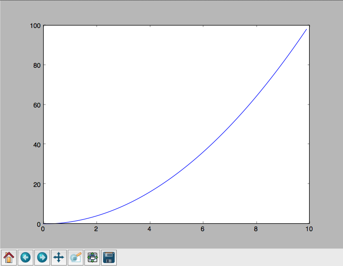

Threading and multiprocessing¶
Threading / multiprocessing¶
Today’s topics:
- Threading / multiprocessing motivation and options
- threading module
- multiprocessing module
- other options
Motivations for parallel execution¶
- Performance
- Limited by “Amdahl’s Law” http://en.wikipedia.org/wiki/Amdahl%27s_law
- CPUs aren’t getting much faster
- Event handling
- If a system handles asynchronous events, a seperate thread of execution could handle those events and let other threads do other work
- Examples:
- Network applications
- User interfaces
Parallel programming can be hard!
If your problem can be solved sequentially, consider the costs and benefits before going parallel.
Parallelization strategy for performance¶

Parallelization strategy for performance¶
- Not every problem is parallelizable
- There is an optimal number of threads for each problem in each environment, so make it tunable
- Working concurrently opens up synchronization issues
- Methods for synchronizing threads:
- locks
- queues
- signaling/messaging mechanisms
Threads versus processes in Python¶
Threads are lightweight processes, run in the address space of an OS process, so a component of a a process.
This allows multiple threads access to data in the same scope.
Python threads are true OS level threads
Threads can not gain the performance advantage of multiple processors due to the Global Interpreter Lock (GIL)
But the GIL is released during IO, allowing IO bound processes to benefit from threading
Processes¶
A process contains all the instructions and data required to execute independently, so processes do not share data!
Mulitple processes best to speed up CPU bound operations.
The Python interpreter isn’t lightweight!
Communication between processes can be achieved via:
multiprocessing.Queue
multiprocessing.Pipe
and regular IPC (inter-process communication)
Data moved between processes must be pickleable
GIL¶
Global Interpreter Lock
This is a lock which must be obtained by each thread before it can execute, ensuring thread safety

The GIL is released during IO operations, so threads which spend time waiting on network or disk access can enjoy performance gains
The GIL is not unlike multitasking in humans, some things can truly be done in parallel, others have to be done by time slicing.
Note that potentially blocking or long-running operations, such as I/O, image processing, and NumPy number crunching, happen outside the GIL. Therefore it is only in multithreaded programs that spend a lot of time inside the GIL, interpreting CPython bytecode, that the GIL becomes a bottleneck. But: it can still cause performance degradation.
Not only will threads not help cpu-bound problems, but it can actually make things worse, especially on multi-core machines!
Some alternative Python implementations such as Jython and IronPython have no GIL
cPython and PyPy have one
David Beazley’s talk on the gil
Posted without comment¶

A CPU bound problem¶
Numerically integrate the function \(y =x^2\) from 0 to 10. http://www.wolframalpha.com/input/?i=x%5E2
{kind=link}
Solution: http://www.wolframalpha.com/input/?i=int(x%5E2,0,10)
Parallel execution example¶
Consider the following code from: Examples/integrate/integrate.py
def f(x):
return x**2
def integrate(f, a, b, N):
s = 0
dx = (b-a)/N
for i in xrange(N):
s += f(a+i*dx)
return s * dx
Break down the problem into parallelizable chunks, then add the results together:
We can do better than this
The threading module¶
Starting threads doesn’t take much:
import sys
import threading
import time
def func():
for i in xrange(5):
print("hello from thread %s" % threading.current_thread().name)
time.sleep(1)
threads = []
for i in xrange(3):
thread = threading.Thread(target=func, args=())
thread.start()
threads.append(thread)
- The process will exit when the last non-daemon thread exits.
- A thread can be specified as a daemon thread by setting its daemon
attribute:
thread.daemon = True - daemon threads get cut off at program exit, without any opportunity for cleanup. But you don’t have to track and manage them. Useful for things like garbage collection, network keepalives, ..
- You can block and wait for a thread to exit with thread.join()
Subclassing Thread¶
You can adding threading capability to your own classes
Subclass Thread and implement the run method
import threading
class MyThread(threading.Thread):
def run(self):
print "hello from %s" % threading.current_thread().name
thread = MyThread()
thread.start()
Race Conditions¶
In the last example we saw threads competing for access to stdout.
Worse, if competing threads try to update the same value, we might get an unexpected race condition
Race conditions occur when multiple statements need to execute atomically, but get interrupted midway
See Examples/race_condition.py
| Thread 1 | Thread 2 | Integer value | |
|---|---|---|---|
| 0 | |||
| read value | ← | 0 | |
| increase value | 0 | ||
| write back | → | 1 | |
| read value | ← | 1 | |
| increase value | 1 | ||
| write back | → | 2 |
| Thread 1 | Thread 2 | Integer value | |
|---|---|---|---|
| 0 | |||
| read value | ← | 0 | |
| read value | ← | 0 | |
| increase value | 0 | ||
| increase value | 0 | ||
| write back | → | 1 | |
| write back | → | 1 |
http://en.wikipedia.org/wiki/Race_condition
Deadlocks¶
Synchronization and Critical Sections are used to control race conditions
But they introduce other potential problems...
like: http://en.wikipedia.org/wiki/Deadlock
“A deadlock is a situation in which two or more competing actions are each waiting for the other to finish, and thus neither ever does.”
When two trains approach each other at a crossing, both shall come to a full stop and neither shall start up again until the other has gone
See also Livelock:
Two people meet in a narrow corridor, and each tries to be polite by moving aside to let the other pass, but they end up swaying from side to side without making any progress because they both repeatedly move the same way at the same time.
Locks¶
Lock objects allow threads to control access to a resource until they’re done with it
This is known as mutual exclusion, often called mutex
Python 2 has a deprecated module called mutex for this. Use a Lock instead.
A Lock has two states: locked and unlocked
If multiple threads have access to the same Lock, they can police
themselves by calling its .acquire() and .release() methods
If a Lock is locked, .acquire will block until it becomes unlocked
These threads will wait in line politely for access to the statements in f()
import threading
import time
lock = threading.Lock()
def f():
lock.acquire()
print "%s got lock" % threading.current_thread().name
time.sleep(1)
lock.release()
threading.Thread(target=f).start()
threading.Thread(target=f).start()
threading.Thread(target=f).start()
Nonblocking Locking¶
.acquire() will return True if it successfully acquires a lock
Its first argument is a boolean which specifies whether a lock should
block or not. The default is True
import threading
lock = threading.Lock()
lock.acquire()
if not lock.acquire(False):
print("couldn't get lock")
lock.release()
if lock.acquire(False):
print("got lock")
threading.RLock - Reentrant Lock¶
Useful for recursive algorithms, a thread-specific count of the locks is maintained
A reentrant lock can be acquired multiple times by the same thread
Lock.release() must be called the same number of times as Lock.acquire()
by that thread
threading.Semaphore¶
Like an RLock, but in reverse
A Semaphore is given an initial counter value, defaulting to 1
Each call to acquire() decrements the counter, release() increments it
If acquire() is called on a Semaphore with a counter of 0, it will block
until the Semaphore counter is greater than 0.
Useful for controlling the maximum number of threads allowed to access a resource simultaneously

Locking Exercise¶
In: Examples/lock/stdout_writer.py
Multiple threads in the script write to stdout, and their output gets jumbled
- Add a locking mechanism to give each thread exclusive access to stdout
- Try adding a Semaphore to allow 2 threads access at once
Managing thread results¶
We need a thread safe way of storing results from multiple threads of execution. That is provided by the Queue module.
Queues allow multiple producers and multiple consumers to exchange data safely
Size of the queue is managed with the maxsize kwarg
It will block consumers if empty and block producers if full
If maxsize is less than or equal to zero, the queue size is infinite
from Queue import Queue
q = Queue(maxsize=10)
q.put(37337)
block = True
timeout = 2
print(q.get(block, timeout))
Other Queue types¶
Queue.LifoQueue
- Last In, First Out
Queue.PriorityQueue
- Lowest valued entries are retrieved first
One pattern for PriorityQueue is to insert entries of form data by
inserting the tuple:
(priority_number, data)
Threading example¶
See Examples/threading/integrate_main.py
#!/usr/bin/env python
import argparse
import os
import sys
import threading
import Queue
sys.path.append(os.path.join(os.path.dirname(__file__), ".."))
from integrate.integrate import integrate, f
from decorators.decorators import timer
@timer
def threading_integrate(f, a, b, N, thread_count=2):
"""break work into two chunks"""
N_chunk = int(float(N) / thread_count)
dx = float(b-a) / thread_count
results = Queue.Queue()
def worker(*args):
results.put(integrate(*args))
threads = []
for i in xrange(thread_count):
x0 = dx*i
x1 = x0 + dx
thread = threading.Thread(target=worker, args=(f, x0, x1, N_chunk))
thread.start()
print "Thread %s started" % thread.name
# thread1.join()
return sum( (results.get() for i in xrange(thread_count) ))
if __name__ == "__main__":
parser = argparse.ArgumentParser(description='integrator')
parser.add_argument('a', nargs='?', type=float, default=0.0)
parser.add_argument('b', nargs='?', type=float, default=10.0)
parser.add_argument('N', nargs='?', type=int, default=10**7)
parser.add_argument('thread_count', nargs='?', type=int, default=2)
args = parser.parse_args()
a = args.a
b = args.b
N = args.N
thread_count = args.thread_count
print("Numerical solution with N=%(N)d : %(x)f" % \
{'N': N, 'x': threading_integrate(f, a, b, N, thread_count=thread_count)})
Threading on a CPU bound problem¶
Try running the code in examples/threading/integrate_main.py
It accepts 4 arguments:
./integrate_main.py 0 10 1000000 4
What happens when you change the thread count? What thread count gives the maximum speed?
Multiprocessing¶
multiprocessing provides an API very similar to threading, so the transition is easy
use multiprocessing.Process instead of threading.Thread
import multiprocessing
import os
import time
def func():
print "hello from process %s" % os.getpid()
time.sleep(1)
proc = multiprocessing.Process(target=func, args=())
proc.start()
proc = multiprocessing.Process(target=func, args=())
proc.start()
Differences with threading¶
Multiprocessing has its own multiprocessing.Queue which handles
interprocess communication
Also has its own versions of Lock, RLock, Semaphore
from multiprocessing import Queue, Lock
multiprocessing.Pipe for 2-way process communication:
from multiprocessing import Pipe
parent_conn, child_conn = Pipe()
child_conn.send("foo")
print parent_conn.recv()
Pooling¶
A processing pool contains worker processes with only a configured number running at one time
from multiprocessing import Pool
pool = Pool(processes=4)
The Pool module has several methods for adding jobs to the pool
apply_async(func[, args[, kwargs[, callback]]])
map_async(func, iterable[, chunksize[, callback]])
Pooling example¶
from multiprocessing import Pool
def f(x):
return x*x
if __name__ == '__main__':
pool = Pool(processes=4)
result = pool.apply_async(f, (10,))
print(result.get(timeout=1))
print(pool.map(f, range(10)))
it = pool.imap(f, range(10))
print(it.next())
print(it.next())
print(it.next(timeout=1))
import time
result = pool.apply_async(time.sleep, (10,))
print(result.get(timeout=1))
http://docs.python.org/3/library/multiprocessing.html#module-multiprocessing.pool
ThreadPool¶
Threading also has a pool
Confusingly, it lives in the multiprocessing module
from multiprocessing.pool import ThreadPool
pool = ThreadPool(processes=4)
Threading versus multiprocessing, networking edition¶
We’re going to test making concurrent connections to a web service in:
Examples/server/app.py
It is a WSGI application which can be run with Green Unicorn or another WSGI server
$ gunicorn app:app --bind 0.0.0.0:37337
client-threading.py makes 100 threads to contact the web service
client-mp.py makes 100 processes to contact the web service
client-pooled.py creates a ThreadPool
client-pooled.py contains a results Queue, but doesn’t use it. Can you
collect all the output from the pool into a single data structure using
this Queue?
Other options¶
Traditionally, concurency has been achieved through multiple process communication and in-process threads, as we’ve seen
Another strategy is through micro-threads, implemented via coroutines and a scheduler
A coroutine is a generalization of a subroutine which allows multiple entry points for suspending and resuming execution
The threading and the multiprocessing modules follow a `preemptive multitasking model: http://en.wikipedia.org/wiki/Preemption_(computing)
Coroutine based solutions follow a cooperative multitasking model
A Curious Course on Coroutines and Concurrency
With send(), a generator becomes a coroutine¶
def coroutine(n):
try:
while True:
x = (yield)
print(n+x)
except GeneratorExit:
pass
targets = [
coroutine(10),
coroutine(20),
coroutine(30),
]
for target in targets:
target.next()
for i in range(5):
for target in targets:
target.send(i)
Packages using coroutines for micro threads¶
By “jumping” to parallel coroutines, our application can simulate true threads.
Creating the scheduler which does the jumping is an exercise for the reader, but look into these packages which handle the dirty work
- interface for creating coroutine based microthreads
- a concurrent networking library, based on greenlet. Developed for Second Life
- forked from eventlet. Built on top of greenlet and libevent, a portable event loop with strong OS support
- Python 3.4+ : the asyncio module
Distributed programming¶
A distributed system is one in which components located on networked computers communicate and coordinate their actions by passing messages
There are lots of ways to do this at different layers. MPI, *-RPC, Pyro, ...
Celery¶
“Celery is an asynchronous task queue/job queue based on distributed message passing”
Provides an API for defining tasks, and retrieving results from those tasks
Messages are passed via a “message broker”, of which Celery supports several:
- RabbitMQ (default)
- Redis
- MongoDB
- Amazon SQS
- ...
Celery worker processes are run on compute nodes, while the main process farms jobs out to them:
Celery in one minute¶
# tasks.py
from celery import Celery
celery = Celery('tasks', backend="amqp", broker='amqp://guest@localhost//')
@celery.task
def add(x, y):
return x + y
% celery -A tasks worker --loglevel=INFO -c 4
from tasks import add
result = add.delay(2,3)
print result.get()